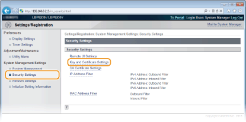
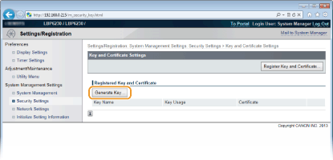

0KU8-032
O par de chaves necessário para a comunicação codificada via Secure Sockets Layer (SSL) pode ser gerado com a impressora. Você pode usar o SSL ao acessar a impressora via o Remote UI. É possível registrar até três pares de chave na impressora.
1
Inicie o Remote UI e faça o logon no modo Administrador Sistema. Iniciando o Remote UI
2
Clique em [Settings/Registration].

3
Clique em [Security Settings]  [Key and Certificate Settings].
[Key and Certificate Settings].

4
Clique em [Generate Key].


Para excluir um par de chaves registrado
No lado direito do par de chaves que deseja excluir, clique [Delete] [OK].
Um par de chaves não pode ser excluído quando "SSL" é exibido sob [Key Usage], indicando que o par de chaves está em uso. Neste caso, desative o SSL ou substitua o par de chaves por outro. Depois, você poderá excluir o par de chaves inicial.
5
Especifique as configurações para a chave e o certificado.

 [Key Settings]
[Key Settings][Key Name]
Insira até 24 caracteres alfanuméricos para nomear o par de chaves. Defina um nome que você encontrará facilmente em uma lista em um momento posterior.
Insira até 24 caracteres alfanuméricos para nomear o par de chaves. Defina um nome que você encontrará facilmente em uma lista em um momento posterior.
[Signature Algorithm]
Selecione o algoritmo de assinatura a partir da lista suspensa.
Selecione o algoritmo de assinatura a partir da lista suspensa.
[Key Algorithm]
O algoritmo usado para gerar chaves é o RSA. Selecione o comprimento da chave na lista suspensa. Quanto maior o número do comprimento de chave, mais lenta a comunicação. Entretanto, a segurança é mais alta.
[512-bit] não pode ser selecionado como comprimento de chave se [SHA384] ou [SHA512] estiver selecionado para [Signature Algorithm].
O algoritmo usado para gerar chaves é o RSA. Selecione o comprimento da chave na lista suspensa. Quanto maior o número do comprimento de chave, mais lenta a comunicação. Entretanto, a segurança é mais alta.
[512-bit] não pode ser selecionado como comprimento de chave se [SHA384] ou [SHA512] estiver selecionado para [Signature Algorithm].
 [Certificate Settings]
[Certificate Settings][Validity Start Date]
Digite a data do início da validade do certificado no formato ano/mês/dia. A data deve ser de 1 de janeiro de 2000 a 31 de dezembro de 2037.
Digite a data do início da validade do certificado no formato ano/mês/dia. A data deve ser de 1 de janeiro de 2000 a 31 de dezembro de 2037.
[Validity End Date]
Digite a data do final da validade do certificado no formato ano/mês/dia. A data deve ser de 1 de janeiro de 2000 a 31 de dezembro de 2037 e não pode ser anterior a [Validity Start Date]
Digite a data do final da validade do certificado no formato ano/mês/dia. A data deve ser de 1 de janeiro de 2000 a 31 de dezembro de 2037 e não pode ser anterior a [Validity Start Date]
[Country/Region]
Clique no botão de opção [Select Country/Region] e selecione o país/região na lista suspensa. Você também pode clicar no botão de opção [Enter Internet Country Code] e inserir um código de país, como "US" para os EUA.
Clique no botão de opção [Select Country/Region] e selecione o país/região na lista suspensa. Você também pode clicar no botão de opção [Enter Internet Country Code] e inserir um código de país, como "US" para os EUA.
[State]/[City]
Se necessário, digite até 24 caracteres alfanuméricos para o endereço.
Se necessário, digite até 24 caracteres alfanuméricos para o endereço.
[Organization]/[Organization Unit]
Se necessário, digite até 24 caracteres alfanuméricos para o nome da organização.
Se necessário, digite até 24 caracteres alfanuméricos para o nome da organização.
[Common Name]
Se necessário, digite até 48 caracteres numéricos para o nome comum do certificado. "Nome Comum" geralmente é abreviado como "CN".
Se necessário, digite até 48 caracteres numéricos para o nome comum do certificado. "Nome Comum" geralmente é abreviado como "CN".
6
Clique em [OK].
Um par de chaves leva aproximadamente de 10 a 15 minutos para ser gerado.
Depois que o par de chaves foi gerado, ele é automaticamente registrado na impressora.